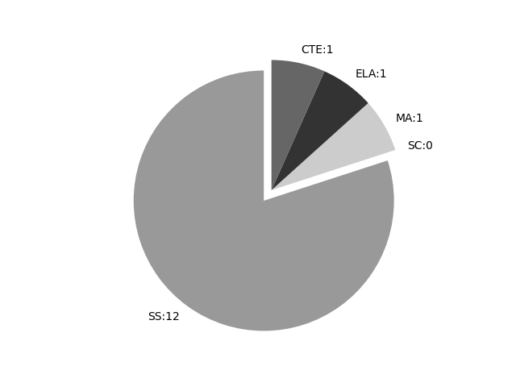

Rhode Island
Report date: 2021-07-08
The frequency of all keywords found in this state's standards: 15
Comparable state score: 0.369 (median: .303, SD: .324)
The frequency above is the sum of all keywords found in all of this state's four core academic standards and the state's CTE/career standards. This total count is broken down by keyword and discipline area below.
On this site, 'comparable scores' are calculated as: keywords found divided by total words in the standards document(s) - multiplied by 100,000. The comparable scores attempt to normalize data, accounting for very different sizes of curriculum guidance documentation.
Frequencies by keyword or phrase:- Spatial: 10
- Geographic Information System: 1
- Global Positioning System: 1
- GIS: 3

Frequencies by discipline area: - SS: 12
(Comp: 1.841) - SC: 0
(Comp: 0.0) - MA: 1
(Comp: 0.124) - ELA: 1
(Comp: 0.08) - CTE: 1
(Comp: 0.115)
Support files: Examples of keyword use by discipline area (and document): - CTE
- CTE_BOT_Standards_May_7_2018.pdf, page:106, position:480
skills required for skilled production occupations in all sectors of advanced manufacturing. Students need to demonstrate competency in the following areas: (1) Math and Measurement, (2) Spatial Reasoning and Manufacturing Technology, and (3)
- ELA
- Rhode Island Core Standards for ELA.pdf, page:31, position:2035
knew, believed, suspected, heard, wondered). 6.Acquire and use accurately grade-appropriate conversational, general academic, and domain-specific words and phrases,8 including those that signal spatial and temporal relationships. (See grade 3 Reading
- MA
- Rhode Island Core Standards V2 4.9.21.pdf, page:4, position:1413
in combined sets, or counting the number of objects that remain in a set after some are taken away. 2. Students describe their physical world using geometric ideas (e.g., shape, orientation, spatial relations) and vocabulary. They identify, name,
- SS
- RI-SS-GSEs-K-12-Final-Version.pdf, page:3, position:507
Statement of Enduring Knowledge Students: G 1: Understanding and interpreting the organization of people, places, and environments on Earth™s surface provides an understanding of the world in spatial terms. G1 -1: Understand maps, globes, and othe - RI-SS-GSEs-K-12-Final-Version.pdf, page:25, position:2036
absolute location. b. utilizing technology to access geographic databases such as GPS and Geographic Information Systems (GIS). b. analyzing the data from geographic technology (e.g., GPS and GIS) for research and application for problem solvin - RI-SS-GSEs-K-12-Final-Version.pdf, page:25, position:453
Strand G 1: The World in Spatial Terms: Understanding and interpreting the organization of people, places, and environments on Earth™s surface provides an understanding of the world in spatial terms. GSEs for Grades K-2 GSEs for Grades 3-4 - RI-SS-GSEs-K-12-Final-Version.pdf, page:25, position:290
Civics & Government, Historical Perspectives (HP 1-3) ΠDecember 2008 ~ Historical Perspectives (HP 4-5), Geography, Economics ΠNovember 2012 GSEs for Geography Strand G 1: The World in Spatial Terms: Understanding and interpreting the organi - RI-SS-GSEs-K-12-Final-Version.pdf, page:25, position:1962
b. utilizing geographic tools like latitude and longitude to identify absolute location. b. utilizing technology to access geographic databases such as GPS and Geographic Information Systems (GIS). b. analyzing the data from geographic techno - RI-SS-GSEs-K-12-Final-Version.pdf, page:42, position:1446
two types of geographical features, namely natural geographical features (e.g., landforms, ecosystems) and artificial geographical features (e.g., human settlements, engineered constructs) Geographic Information System (GIS) Πa computerized geographic database that - RI-SS-GSEs-K-12-Final-Version.pdf, page:42, position:1555
and artificial geographical features (e.g., human settlements, engineered constructs) Geographic Information System (GIS) Πa computerized geographic database that contains information about the spatial distribution of physical (e.g., topography, vege - RI-SS-GSEs-K-12-Final-Version.pdf, page:42, position:2726
and structure of the Earth Globe Πa scale model of Earth that correctly represents area, relative size and shape of physical features, distance between points and true compass direction Global Positioning System (GPS) Πa radio navigation system that allows la - RI-SS-GSEs-K-12-Final-Version.pdf, page:42, position:1476
features, namely natural geographical features (e.g., landforms, ecosystems) and artificial geographical features (e.g., human settlements, engineered constructs) Geographic Information System (GIS) Πa computerized geographic database that conta - RI-SS-GSEs-K-12-Final-Version.pdf, page:44, position:1843
or drift very slowly, causing the present-day configurations of continents and the formation of physical features (e.g., mountain ranges, ocean basins, valley systems) Political features Πspatial expressions of political behavior: boundaries on - RI-SS-GSEs-K-12-Final-Version.pdf, page:45, position:346
ΠDecember 2008 ~ Historical Perspectives (HP 4-5), Geography, Economics ΠNovember 2012 Sea level Πthe level of the surface of the sea with respect to the land Settlement pattern Πthe spatial distribution and arrangement of human habitations - RI-SS-GSEs-K-12-Final-Version.pdf, page:45, position:558
and arrangement of human habitations, including rural and urban centers Site Πthe specific location where something may be found, including its physical setting (e.g., on a floodplain) Spatial Πpertaining to distribution, distance, directio
{kind=link}